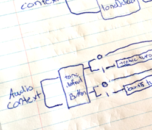
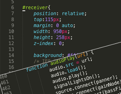
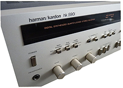

Hit the power button and watch as this receiver comes to life!
What exactly did I do here?
I reverse engineered my own 1982 Harman Kardon 590i receiver and realized it as a web application.

A sketch of the audio routing.
Utilizing technologies like Less, JavaScript, HTML5, Google Web Fonts, streaming audio, and the JavaScript Web Audio API I was able to replicate the real-life receiver's functionality.
The interface is constructed almost entirely in CSS and HTML5, and matched as closely as possible to the real thing. A very small css sprite image was used to create the digital font in the electronic display. Go ahead, have a look at the source code!
As mentioned, this is a Google Chrome experiment. Due to patent issues, the formats of the streaming audio sources will not work in the Firefox browser.
Speaking of the streaming audio sources... those are real live radio stations that you are hearing as you scan through the channels in AM or FM mode.
Hear something you like? Go ahead and save it as a preset by hitting the memory button and then selecting a preset button.
Is it all about that bass? Then turn up that bass dial! Set the treble and balance where you would like it.
The bass/treble and tone defeat functions allow you to customize your sound, or bypass the bass and treble dials altogether
State-of-the-mind soundHarmon Kardon's state-of-the-mind technology is expertly exemplified in the hk590i receiver.
The hk590i offers a full 45 Watts per channel,* with 35 amps of High instantaneous Current Capability (HCC) available under peak demand conditions. With the transient power nearly doubling into 4 Ohms and continuing to increase dramatically into 2 Ohms, the dynamic behavior approaches the ideal.
The tuner section shuts down when the photo or aux buttons are processed to eliminate the possibility of digital switching noise or bleed-through. Switchable bass and treble turnover frequencies allow for custom-tailoring of the tone-control charcteristics to the listening environment. In addition, the hk590i has tone defeat and 2-way tape capability.
The digital synthesized quartz-locked tuning section of the hk590i can be tuned up or down manually, or will scan automatically to the next station. For added convenience, stations may be locked into one of the 8 AM and 8 FM memory presets.
The hk590i. An advancement in affordably accurate audio.
*45 Watts RMS per channel into 8 Ohms, 20Hz-20kHz with less than .08% THD.Specifications
Tuning range: FM, MW
Power output: 45 watts per channel into 8Ω (stereo)
Frequency response: 1Hz to 120kHz
Total harmonic distortion: 0.08%
Input sensitivity: 2.2mV (MM), 135mV (line)
Signal to noise ratio: 80dB (MM), 82dB (line)
Dimensions: 443 x 134 x 365mm
Weight: 8kg
240 Crossway Park West, Woodbury, NY 11797
Toll free 1-800-528-6050, ext. 870